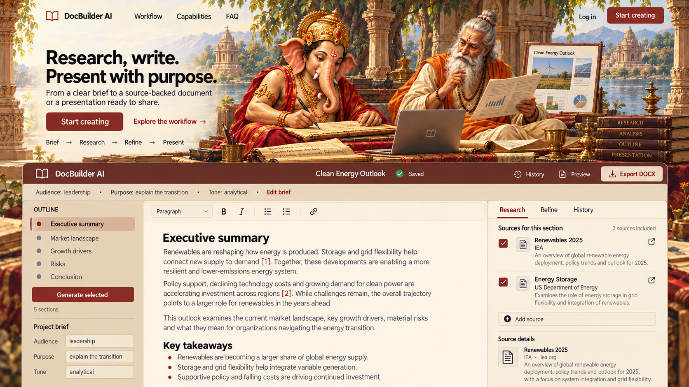

Review notes
Ganesha drafts while Vyasa reviews report pages beside a laptop; no war. Burgundy topbar, sand outline and parchment editor visibly color the container. Brief/source/save controls and broad lower-half footprint retained. Art has a relatively realistic painterly finish.